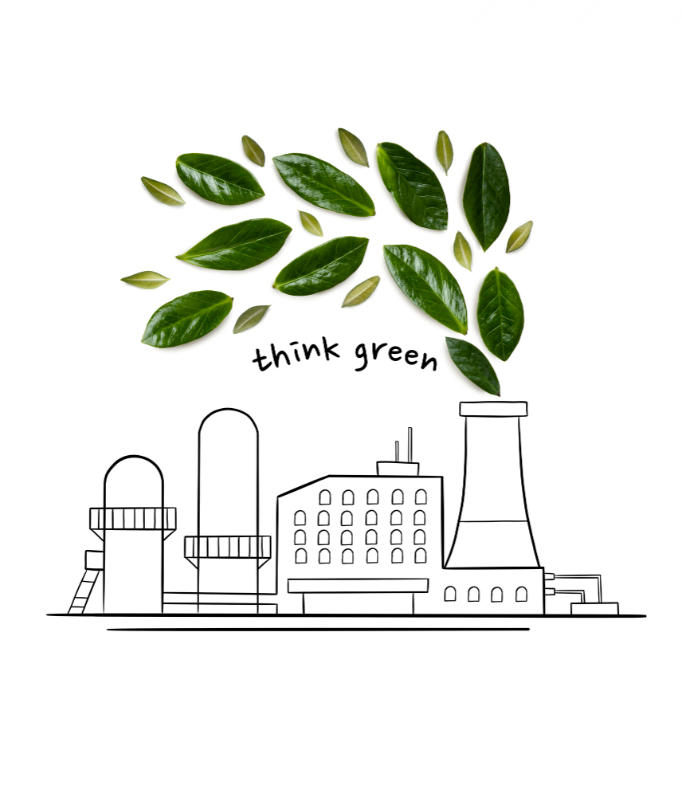

Innovative Waste-To-Energy Solutions For Cleaner Cities

As cities around the globe strive for more sustainable futures, the challenge of managing waste while reducing environmental impact has become increasingly critical. Innovative waste-to-energy (WTE) technologies offer a promising solution to this challenge, transforming how urban centers handle waste and generate energy. These technologies aim to reduce the volume of waste ending up in landfills and contribute to cleaner, more sustainable cities by generating renewable energy from what was once considered mere refuse. A pivotal component in these technologies’ efficiency is implementing robust emissions and odor control systems, such as h2s removal systems. These systems are essential for minimizing the environmental impact of waste-to-energy processes, ensuring that the transition to cleaner energy sources doesn’t come at the cost of air quality or public health. Continue exploring how advanced technologies transform urban environments into sustainable models by converting waste into valuable energy sources.
Exploring Waste-To-Energy Technologies As urban centers expand, the quest for sustainable waste management and energy production solutions becomes more pressing. Waste-to-energy (WTE) technologies represent a critical advancement in this journey, offering innovative methods to convert waste into valuable energy resources. Below are the specifics of these technologies, highlighting their distinct processes and contributions to sustainable urban development.
Combustion Often considered the cornerstone of WTE technologies, combustion involves incineration of waste materials at high temperatures. This process efficiently reduces waste volume, while the heat generated can be harnessed to produce steam, driving turbines for electricity generation. The key to its success lies in advanced emission control systems that mitigate environmental impacts, ensuring a cleaner energy production cycle.
Gasification This technology takes a sophisticated approach by converting waste into synthetic gas or syngas through high-temperature treatment in a low-oxygen environment. The resulting gas is a versatile energy carrier that can generate electricity or as a feedstock for producing chemicals and fuels. Gasification stands out for its potential to process a wide range of waste types, including biomass and plastics, with lower emissions than traditional combustion.
Anaerobic digestion Anaerobic digestion decomposes organic waste using microorganisms without oxygen. This method generates biogas, comprising methane and carbon dioxide, suitable for heating, electricity production, or refinement into biomethane for use as a renewable natural gas alternative. Its appeal lies in its ability to process waste and produce energy simultaneously, offering a sustainable option for managing organic waste streams from municipal, agricultural, and industrial sources. These technologies each offer a pathway to tackle the growing issue of waste management in urban areas and contribute to the generation of renewable energy, aligning with global sustainability goals.
Advantages Of Waste-To-Energy Solutions

Waste-to-energy (WTE) technologies are at the forefront of transforming urban waste management practices and energy production, offering hope for cities grappling with the dual challenges of waste disposal and sustainable energy needs.
Here are the detailed benefits these innovative solutions bring to the table
Reducing landfill dependency
The strategic conversion of waste to energy significantly curtails the need for landfills, addressing one of the most pressing environmental concerns. This advantage extends beyond mere waste reduction, mitigating the risk of groundwater contamination and reducing the emission of landfill gases, primarily methane, a potent greenhouse gas. By diverting waste from landfills, WTE technologies play a crucial role in preserving natural habitats and preventing the environmental degradation associated with traditional waste disposal methods.
Generates renewable energy
Through converting waste materials into electricity, heat, and even fuels, WTE facilities contribute to a more diverse and resilient energy portfolio. This process provides a renewable energy source and reduces reliance on fossil fuels, leading to a decrease in carbon emissions. The energy produced can power homes and businesses and even contribute to cities’ heating and cooling systems, showcasing a practical application of circular economy principles.
Lowers greenhouse gas emissions
By optimizing waste as a resource for energy generation, WTE solutions significantly lower greenhouse gas emissions compared to conventional waste disposal and energy production methods. This is achieved by reducing methane emissions from landfills and displacing fossil-fuel-derived electricity, marking a positive step towards combating climate change and contributing to cleaner air quality. Incorporating waste-to-energy technologies into urban infrastructure signifies a critical step toward addressing environmental and energy challenges and fostering a sustainable economy. Through innovative waste management and energy production practices, cities can unlock environmental, economic, and social benefits, contributing to the health and well-being of the planet and its inhabitants. Overcoming Challenges In Waste-To-Energy Adoption The path to integrating waste-to-energy (WTE) solutions into urban infrastructure is fraught with obstacles. However, addressing these challenges is essential for cities and organizations aiming to harness the benefits of WTE technologies.
Below are the strategies to navigate these hurdles effectively
Financial investment
High upfront costs for WTE facilities can deter municipalities and investors. Overcoming this barrier requires exploring various funding options, including government grants, green bonds, and public-private partnerships. These financial mechanisms can provide the necessary capital investment while spreading the risk and ensuring a return on investment over time.
Public perception and acceptance
Concerns about the environmental impact of WTE processes can lead to public skepticism. To build community support, engaging in open, transparent communication about the benefits and safety measures of WTE technologies is crucial. Educational campaigns and public consultations can demystify the processes involved and showcase the environmental and economic advantages of converting waste to energy. Regulatory and policy framework: Navigating the complex landscape of environmental regulations and securing permits can be a significant hurdle. Advocating for supportive policies and streamlined permitting processes is essential. Collaborating with regulatory bodies to demonstrate the sustainability and efficiency of WTE technologies can lead to developing a regulatory framework that protects the environment and facilitates the adoption of these solutions. Addressing these challenges head-on is vital for unlocking the potential of waste-to-energy technologies as a cornerstone of sustainable urban development.
Conclusion Embracing waste-to-energy technologies marks a pivotal step towards realizing a greener future for urban centers worldwide. By effectively converting waste into clean energy, cities can tackle pressing environmental and energy challenges, driving the global sustainability agenda forward. The journey ahead requires overcoming financial, public perception, and regulatory hurdles, yet the promise of a sustainable, zero-waste future makes this endeavor necessary and imperative.